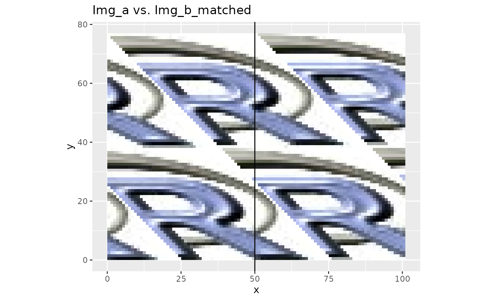

Performs image to image contrast adjustments based on histogram matching using empirical cumulative distribution functions from both images.
Usage
histMatch(
x,
ref,
xmask = NULL,
refmask = NULL,
nSamples = 1e+05,
intersectOnly = TRUE,
paired = TRUE,
forceInteger = FALSE,
returnFunctions = FALSE,
...
)Arguments
- x
SpatRaster. Source raster which is to be modified.
- ref
SpatRaster. Reference raster, to which x will be matched.
- xmask
RasterLayer or SpatRaster. Mask layer for
xto exclude pixels which might distort the histogram, i.e. are not present inref. Any NA pixel inxmaskwill be ignored (maskvalue = NA).- refmask
RasterLayer or SpatRaster. Mask layer for
ref. Any NA pixel inrefmaskwill be ignored (maskvalue = NA).- nSamples
Integer. Number of random samples from each image to build the histograms.
- intersectOnly
Logical. If
TRUEsampling will only take place in the overlap extent of the two rasters. Otherwise the full rasters will be used for sampling.- paired
Logical. If
TRUEthe corresponding pixels will be used in the overlap.- forceInteger
Logical. Force integer output.
- returnFunctions
Logical. If
TRUEthe matching functions will be returned instead of applying them tox.- ...
Further arguments to be passed to writeRaster.
Value
A SpatRaster of x adjusted to the histogram of ref. If returnFunctions = TRUE a list of functions (one for each layer) will be returned instead.
References
Richards and Jia: Remote Sensing Digital Image Analysis. Springer, Berlin, Heidelberg, Germany, 439pp.
Examples
library(ggplot2)
library(terra)
## Original image a (+1 to prevent log(0))
img_a <- rlogo + 1
## Degraded image b
img_b <- log(img_a)
## Cut-off half the image (just for better display)
img_b[, 1:50] <- NA
## Compare Images before histMatching
ggRGB(img_a,1,2,3)+
ggRGB(img_b, 1,2,3, ggLayer = TRUE, stretch = "lin", q = 0:1) +
geom_vline(aes(xintercept = 50))+
ggtitle("Img_a vs. Img_b")
#> Warning: data length [3927] is not a sub-multiple or multiple of the number of columns [101]
## Do histogram matching
img_b_matched <- histMatch(img_b, img_a)
## Compare Images after histMatching
ggRGB(img_a, 1, 2, 3)+
ggRGB(img_b_matched, 1, 2, 3, ggLayer = TRUE, stretch = "lin", q = 0:1) +
geom_vline(aes(xintercept = 50))+
ggtitle("Img_a vs. Img_b_matched")
#> Warning: data length [3927] is not a sub-multiple or multiple of the number of columns [101]

## Histogram comparison
opar <- par(mfrow = c(1, 3), no.readonly = TRUE)
img_a[,1:50] <- NA
redLayers <- c(img_a, img_b, img_b_matched)[[c(1,4,7)]]
names(redLayers) <- c("img_a", "img_b", "img_b_matched")
hist(redLayers)
## Reset par
par(opar)